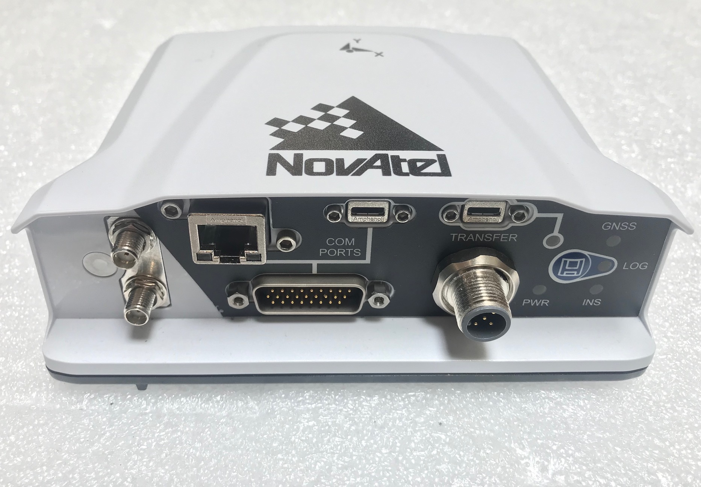

NovAtel PwrPak7 安装指南
NovAtel PwrPak7是一款集成的INS接收器，该设备中包含GNSS接收器和IMU。

安装GPS接收器
Novatel PwrPak7的概述如下所示。

要给接收器的上电，请将电源扩展电缆上的+VIN_A和+VIN_B连接到电源（即12VDC）正极，并将-VIN都连接到负极。详情请参阅以下有关PwrPak7电源线的链接。
PwrPak7接收器支持双天线，ANT1是上方的天线接口，作为主天线（Apollo系统必需）。 ANT2是下方的天线接口，作为辅助天线（可选）。
与Novatel ProPak6类似，要发送RTK校正和日志数据，我们可以使用USB线把PwrPak7上的MicroUSB端口与和车辆上的IPC相连接。
可以通过延长电缆把PwrPak7上的26针连接器与Lidar系统相连。 连接到Lidar系统需要COM2端口和PPS信号。有关延长电缆的详细信息，请参阅下面的网站。
您可以将PwrPak7放置在车辆的大多数位置，但是建议您遵循以下建议：
将PwrPak7放置并固定在后备箱内，Y轴指向正前方。
使用磁性适配器将天线牢固地连接到后备箱盖。
打开后备箱盖子，将天线的数据线放置在后备箱盖和车身之间的空闲区域。
进行杠杆臂测量
按以下步骤进行杆臂值测量：
进行测量之前，请打开IPC。
当PwrPak7和GPS天线就位后，必须测量从PwrPak7到GPS天线的距离。PwrPak7 IMU的中心和天线的中心标记在设备的外部。
距离应测量为：X方向偏移，Y方向偏移和Z方向偏移。轴应由IMU确定。偏移误差必须在1厘米以内，以实现高精度的定位。
配置PwrPak7
请按照如下所示配置GPS和IMU。可以通过键入命令或在NovAtel Connect中加载批处理配置文件来完成此过程。
对于PwrPak7:
WIFICONFIG OFF
UNLOGALL THISPORT
INSCOMMAND ENABLE
SETIMUORIENTATION 5
ALIGNMENTMODE AUTOMATIC
VEHICLEBODYROTATION 0 0 0
SERIALCONFIG COM1 9600 N 8 1 N OFF
SERIALCONFIG COM2 9600 N 8 1 N OFF
INTERFACEMODE COM1 NOVATEL NOVATEL ON
INTERFACEMODE COM2 NOVATEL NOVATEL ON
INTERFACEMODE USB2 RTCMV3 NONE OFF
PPSCONTROL ENABLE POSITIVE 1.0 10000
MARKCONTROL MARK1 ENABLE POSITIVE
EVENTINCONTROL MARK1 ENABLE POSITIVE 0 2
RTKSOURCE AUTO ANY
PSRDIFFSOURCE AUTO ANY
SETINSTRANSLATION ANT1 0.00 1.10866 1.14165 0.05 0.05 0.08
SETINSTRANSLATION ANT2 0.00 1.10866 1.14165 0.05 0.05 0.08
SETINSTRANSLATION USER 0.00 0.00 0.00
EVENTOUTCONTROL MARK2 ENABLE POSITIVE 999999990 10
EVENTOUTCONTROL MARK1 ENABLE POSITIVE 500000000 500000000
LOG COM2 GPRMC ONTIME 1.0 0.25
LOG USB1 GPGGA ONTIME 1.0
LOG USB1 BESTGNSSPOSB ONTIME 1
LOG USB1 BESTGNSSVELB ONTIME 1
LOG USB1 BESTPOSB ONTIME 1
LOG USB1 INSPVAXB ONTIME 1
LOG USB1 INSPVASB ONTIME 0.01
LOG USB1 CORRIMUDATASB ONTIME 0.01
LOG USB1 RAWIMUSXB ONNEW 0 0
LOG USB1 MARK1PVAB ONNEW
LOG USB1 RANGEB ONTIME 1
LOG USB1 BDSEPHEMERISB ONTIME 15
LOG USB1 GPSEPHEMB ONTIME 15
LOG USB1 GLOEPHEMERISB ONTIME 15
LOG USB1 INSCONFIGB ONCE
LOG USB1 VEHICLEBODYROTATIONB ONCHANGED
SAVECONFIG
 WARNING: 请根据实际测量值修改 SETINSTRANSLATION 行的内容。ANT1用于必需的主天线，而ANT2用于辅助天线，它是可选的。
WARNING: 请根据实际测量值修改 SETINSTRANSLATION 行的内容。ANT1用于必需的主天线，而ANT2用于辅助天线，它是可选的。
例如：
SETINSTRANSLATION ANT1 -0.05 0.5 0.8 0.05 0.05 0.08
前三个数字表示杠杆臂距离的测量结果。后三个数字是测量的不确定度。
参考
有关NovAtel PwrPak7的更多信息，请参考：
免责声明
This device is Apollo Platform Supported